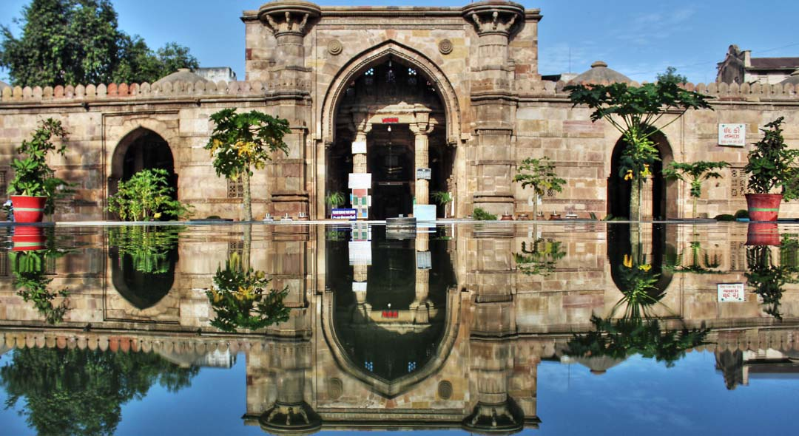
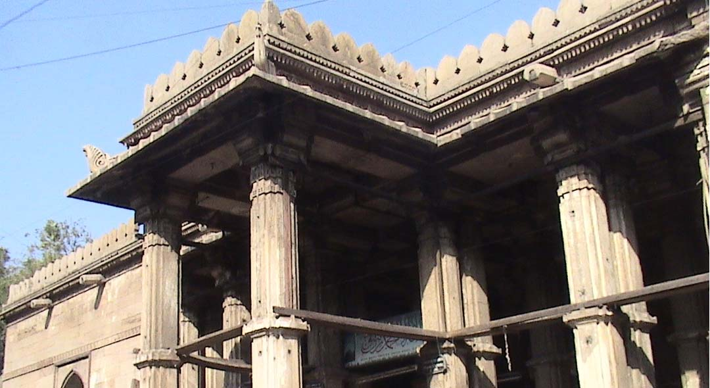

Ahmad Shah I laid the foundation of the city on 26 February 1411(at 1.20 pm, Thursday, the second day of Dhu al-Qi'dah, Hijri year 813) at Manek Burj. He chose it as the new capital on 4 March 1411.
Ahmed Shah I, while camping on the banks of the Sabarmati river, saw a hare chasing a dog. The sultan was intrigued by this and asked his spiritual adviser for explanation. The sage pointed out unique characteristics in the land which nurtured such rare qualities which turned a timid hare to chase a ferocious dog."Kutte pe jab sassa aaya, raja ne tab sehar basaya!" Impressed by this, the sultan, who had been looking for a place to build his new capital, decided to found the capital here.
Ahmad Shah I, in honour of four Ahmads, himself, his religious teacher Shaikh Ahmad Khattu, and two others, Kazi Ahmad and Malik Ahmad, named it Ahmedabad.
The story is that the king, by the aid of the saint Shaikh Ahmad Khattu, called up the prophet Elijah or Khidr, and from him got leave to build a city if he could find four Ahmads who had never missed the afternoon prayer. A search over Gujarat yielded two, the saint was the third, and the king the fourth. The four Ahmads are said to have been helped by twelve Babas; these were Baba Khoju, Baba Laru, and Baba Karamal, buried at Dholka ; Baba Ali Sher and Baba Mahmud buried at Sarkhej ; a second Baba Ali Sher who used to sit stark naked; Baba Tavakkul buried in the Nasirabad suburb, Baba Lului buried in Manjhuri, Baba Ahmad Nagori buried near the Nalband mosque, Baba Ladha buried near the Halim ni Khidki, Baba Dhokal buried between the Shahpur and Delhi gates, Baba Sayyid buried in Viramgam. There is a thirteenth Baba Kamil Kirmini about whom authorities are not agreed.
|  |
Architecture of AhmedabadThe architecture and design of the new town of Ahmedabad, a walled town situated on the river Sabarmati, was a continuation of Hindu traditions by other means. A French traveler, Taverniere, visiting the town in the 18th Century had described it as ''the headquarters of manufacturing, the greatest city in India, nothing inferior to Venice for rich silks and gold stuffs curiously wrought with birds and flowers.'' It was the same city that James Forbes has described in his memoirs''that until this visit to Ahmedabad I had no conception of the extent of oriental magnificence; the palaces and splendid chambers described in the Arabian nights entertainments, appear no longer overcharged or fabulous.'' In 1856 Buist had noted that ''Ahmedabad is still famous for its Gold, its silks and carved work, and its merchants and brokers enjoy a distinguished reputation of liberality, wealth, and enlightenment.''A treaty with the then rulers of western India, the Poona Peshwas, brought Ahmedabad under the British rule in 1817. The British were keen on annexing Ahmedabad because of ''the commanding influence which the sovereignty over the city of Ahmedabad confers on its possessor in the estimation of the country at a large.'' Both the Mughal and the Peshwa rulers had left the city exhausted and depopulated. At the time of the British arrival, the medieval economy of Ahmedabad had hung on three threads: gold, silk and cotton. The British rule of law helped flowering the strength of the Ahmedabad mahajan (trade builds), and, aided the opium trade to China, by 1839 the town was ''in a most flourishing condition and progressing rapidly'' and its merchants impressing the Europeans by being ''the most enlightened and wealthy in India''. Modern textile technology further oiled the Gujarati virtues of pragmatism, innovation and collaborative partnership in ''reinventing'' Ahmedabad. Its blooming business in textiles had given Ahmedabad the status of ''the Manchester of India'' by the time of the First World War. |
|  |